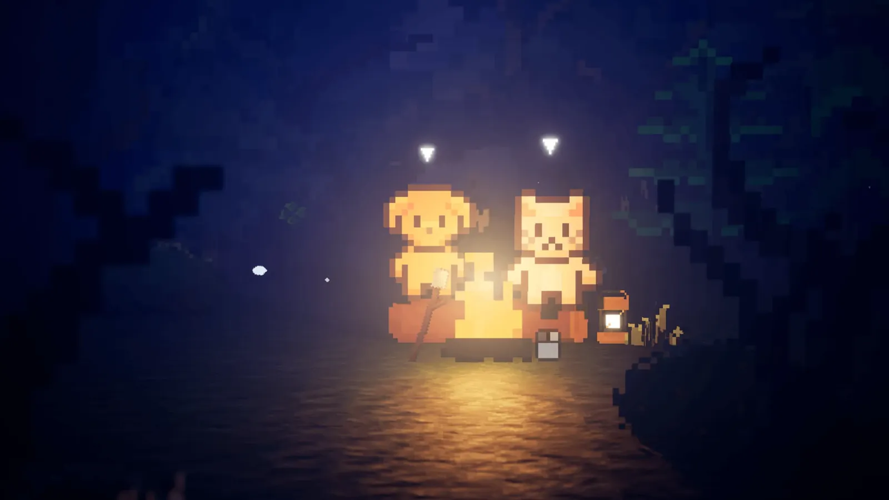
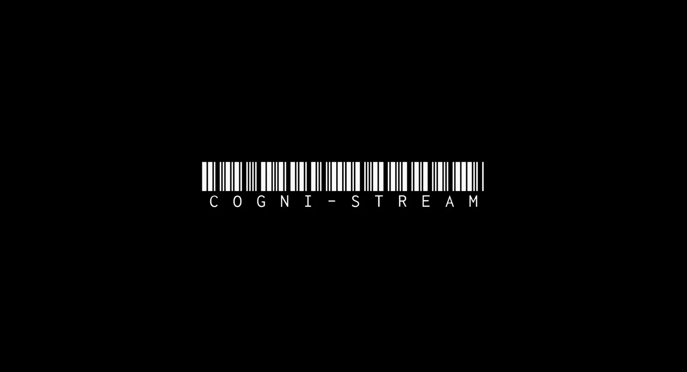

00 / About
Hi, I'm Ashton (Shuhan).
I grew up with a controller in my hands, and that early love of play grew into a career spent designing systems and mechanics that reward mastery. Now I want to push further, into the space where game design overlaps with real engineering practice.
[01] / The Engine
Systems Architecture &
Interaction Design
Logic
& Form
Operating at the intersection of systemic complexity and human intuition. I don't just draft concepts on paper—I build, prototype, and iterate in-engine to guarantee the visceral feel of play.
Core Engines
Interactive
Praxis
02 / Works
SELECTED ARTIFACTS
Completed

Revive
A 2.5D demo pairing hand-drawn pixel art with real-time UE5 lighting, exploring how visual style and dynamic light can carry an emotional narrative.

Cogni-Stream
A speculative critical-design report built around EnGram+, an invasive brain-computer interface that turns knowledge into a subscription tier ‚Ä?and class into a light on your temple.
MiniQuest
A native Android app that turns everyday accelerometer data into an RPG reward loop, applying response interruption and environmental enrichment to break behavioral rigidity ‚Ä?built on MVVM, Kotlin Flow and coroutine-driven AI.
In Progress
Supermarket Together
A low-poly management sim blending RPG and building mechanics, where players design their own store layout and run a restock-price-sell loop. Game design & interaction design on a small team.
Threshold
A desktop-scale diagnostic instrument, not a companion. Six life indicators decay in real time across a conversation, and participants must decide, under time pressure and with incomplete information, whether the AI in front of them is still itself.
03 / ARCHIVE INDEX
04 / Connect
Let's Work
Together.
Have a project in mind, or just want to say hello? My inbox is always open.
Based In
Shanghai, China